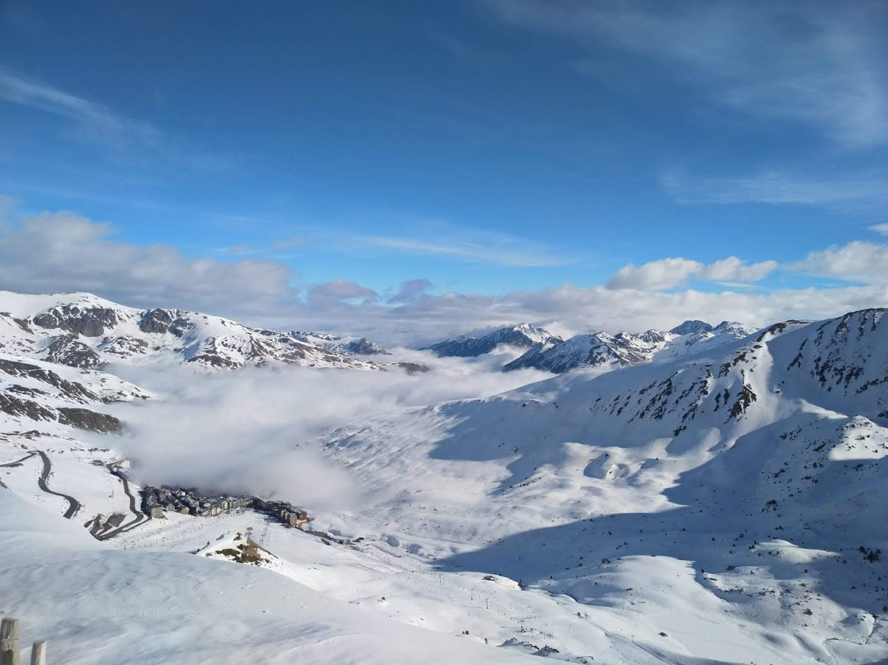
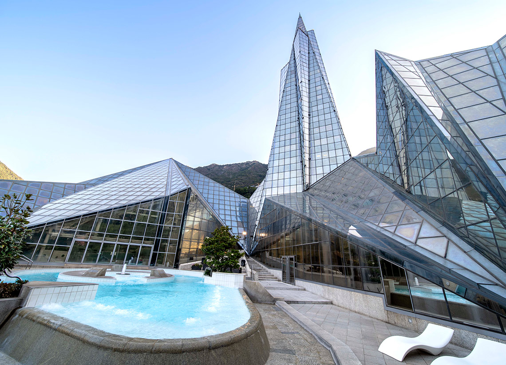

Las mejores cosas que ver y hacer en Andorra
Estas son mis 5 propuestas favoritas para llenar tu viaje:
- Esquiar
- Visitar Andorra la Vella, la capital
- Ir de compras
- Disfrutar de sus Balnearios
- Degustar su gastronomía
1. Donde esquiar en Andorra
Andorra es un paraíso de esquiadores y, desde luego, esquiar es la primera razón que impulsa a los viajeros para visitar este país, pero sabes cuales son los mejores sitios donde esquiar en Andorra.
La principal estación de esquí de Andorra es Grandvalira. Tiene mas de 200 km de pistas repartidos en varias estaciones conectadas entre si. Soldeu el Tarter se puede decir que es su capital. Las otras estaciones de esquí importantes son las de Vallnord y Naturlandia, esta última dedicada al esquí de fondo. Si buscas información de esquí puedes encontrarla toda en infonieve.
2. Que ver en Andorra la Vella
La parte mas interesante de las cosas que ver en Andorra la Vella las encontrarás en el casco histórico de la ciudad, el barrio antiguo o Barri Antic, no muy grande y agradable de recorrer a pie.
El barrio antiguo se corresponde con el pueblo original y se visita cómodamente dando un pequeño paseo desde la Iglesia de San Esteve y la cercana Placa del Poble, hasta la calle Puial. Es un recorrido por calles empedradas y fachadas también de piedra. Recomiendo desviarse para ver la Casa de la Vall, del siglo XVI, sede del Parlamento.
3. Donde ir de compras en Andorra
Otra de las cosas que hacer en Andorra es ir de compras. El mejor lugar para ir de compras es Andorra la Vella, la capital.
La avenida Meritxell es la calle comercial de Andorra la Vella por excelencia. En ella destaca el centro comercial Grans Magatzems Pyrénées, para comprar y comer.
Es posible encontrar algunos productos mas baratos en Andorra debido a los bajos impuestos, pero hay que aclarar que en general se trata de un pequeño ahorro, no se deben esperar grandes chollos. La diferencia en precio es mayor en productos con alta carga impositiva en otros lugares, como el tabaco, el alcohol o la gasolina. Por ello, mucha gente aprovecha para comprar tabaco y licores y si viajas en coche, podrás repostar mas barato antes de salir del país.
Otros productos a buenos precios que puedes encontrar es la moda (ropa de marca), la tecnología o los cosméticos. Es importante ir de compras a Andorra sabiendo lo que se busca, para poder valorar si una oferta realmente lo es. Un dato, en algunos comercios, sobre todo los pequeños es posible regatear.
4. Los mejores balnearios de Andorra
Disfrutar de las aguas termales es otra de mis actividades favoritas que hacer en Andorra y a pesar de que son numerosos los centros termales, uno destaca por encima de todos, Caldea.
- El mejor balneario de Andorra es Caldea
Se trata de uno de los primeros grandes balnearios modernos. A pesar de su edad, se inauguró en 1994, diseñado por Jean-Michel Ruols, todavía hoy tiene un diseño atractivo y moderno y es uno de los spas mas grandes de Europa. Por fuera es un gran edificio de cristal que asemeja una montaña helada. Además de Caldea, muy apto para turismo en familia (niños desde 5 años) está el anexo Inúu, un concepto de relax mas personalizado y para adultos.
- Algunos de los mejores balnearios de Andorra se encuentran en sus hoteles
Entre ellos cabe mencionar el Hotel Termes Carlemany, o el Roc Blanc & Spa, en Andorra la Vella. Puedes ver otros hoteles en Andorra la Vella y otros municipios para disfrutar de las aguas termales en hoteles con spa en Andorra.
Por último, mencionar que el municipio de Escaldes-Engordany está lleno de fuentes públicas de aguas termales que brotan a mas de 60º. En total son 32 fuentes y recorrerlas todas puede ser entretenido. El punto de partida la fuente El Roc del Metge, junto al hotel Hotel Termes Carlemany.
5. Comer en Andorra
En la gastronomía de Andorra destacan las bases de carne de caza: ciervo, ardilla o conejo que a veces se mezclan en un mismo plato, como el civet de venado y jabalí o combinaciones de conejo con buey, pato o cerdo.
También hay platos de pescados de río y platos con vegetales y legumbres como el trinxat de montaña o la escudella. Logicamente hay muchas similitudes con la cocina pirenaica catalana.
Si quieres acompañar tu comida Andorrana puedes hacerlo con un vino de la tierra, se llama Cim de Cel y por estar donde estamos es el vino de Europa elaborado a mayor altitud.
Entre los postres mencionar las torrijas y la coca masegada.
Si eres de esos frikis cerveceros que no pueden salir de un lugar sin probar su cerveza, la cerveza autóctona andorrana se llama Alpha, no esá mal.
- Donde comer en Andorra
Hay muchos sitios para comer o cenar bien en Andorra, pero te voy a recomendar solo uno al que voy siembre que viajo a Andorra, al margen de que me aloje cerca o lejos, es el restaurante Bonet, en Pal.